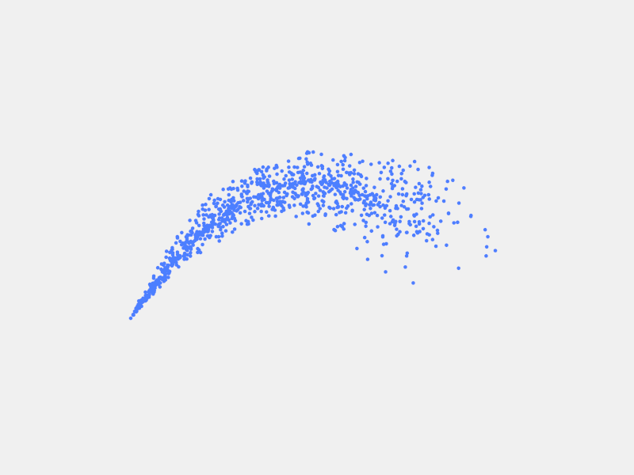

Particle System¶

{kind=link}
Particle System
1 2 3 4 5 6 7 8 9 10 11 12 13 14 15 16 17 18 19 20 21 22 23 24 25 26 27 28 29 30 31 32 33 34 35 36 37 38 39 40 41 42 43 44 45 46 47 48 49 50 51 52 53 54 55 56 57 58 59 60 61 62 63 64 65 66 67 68 69 70 71 72 73 74 75 76 77 78 | import ModernGL, GLWindow
import struct, random, math
GLWindow.Init()
ctx = ModernGL.create_context()
tvert = ctx.VertexShader('''
#version 330
uniform vec2 acc;
in vec2 in_pos;
in vec2 in_prev;
out vec2 out_pos;
out vec2 out_prev;
void main() {
out_pos = in_pos * 2.0 - in_prev + acc;
out_prev = in_pos;
}
''')
vert = ctx.VertexShader('''
#version 330
in vec2 vert;
void main() {
gl_Position = vec4(vert, 0.0, 1.0);
}
''')
frag = ctx.FragmentShader('''
#version 330
out vec4 color;
void main() {
color = vec4(0.30, 0.50, 1.00, 1.0);
}
''')
prog = ctx.Program([vert, frag])
transform = ctx.Program(tvert, ['out_pos', 'out_prev'])
def particle():
a = random.uniform(0.0, math.pi * 2.0)
r = random.uniform(0.0, 0.001)
return struct.pack('2f2f', 0.0, 0.0, math.cos(a) * r - 0.003, math.sin(a) * r - 0.008)
vbo1 = ctx.Buffer(b''.join(particle() for i in range(1024)))
vbo2 = ctx.Buffer(reserve = vbo1.size)
vao1 = ctx.SimpleVertexArray(transform, vbo1, '2f2f', ['in_pos', 'in_prev'])
vao2 = ctx.SimpleVertexArray(transform, vbo2, '2f2f', ['in_pos', 'in_prev'])
render_vao = ctx.SimpleVertexArray(prog, vbo1, '2f8x', ['vert'])
transform.uniforms['acc'].value = (0, -0.0001)
idx = 0
ctx.point_size = 5.0
while GLWindow.Update():
ctx.clear(240, 240, 240)
for i in range(8):
vbo1.write(particle(), offset = idx * struct.calcsize('2f2f'))
idx = (idx + 1) % 1024
render_vao.render(ModernGL.POINTS, 1024)
vao1.transform(vbo2, ModernGL.POINTS, 1024)
ctx.copy_buffer(vbo1, vbo2)
|